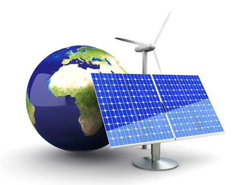

Positive Impact of Technology on Society
Smartphone Revolution
It was just over a decade ago when cell phones were primarily used for calling and sending texts. Today, the uses of cell phones run the gamut. Phones do everything from taking high-resolution pictures to watching pixel-perfect videos, browsing the internet to playing graphic-intensive games to monitoring your movements. It’s astonishing at how this small device can handle demanding tasks in addition to fulfilling basic communication needs.
The advent of smartphones has simplified our lives immensely. People now connect with their loved ones more frequently and easily through video calls and instant messaging services. Tasks, like creating slides, reading emails, and creating documents don’t require a PC anymore.
In a nutshell, smartphone and apps have changed the way we work, communicate and play. In addition, the booming expansion of e-commerce and internet-based companies is directly proportional to the rapid proliferation of smartphones.
Negative Impact of Technology on Society
Less-Active Lifestyle
While the smartphone revolution has made our lives easy, it has also made us lazy. Today, the whole world is at our fingertips, and thus we don’t have to work or move around like we did previously to get things done.
Our sedentary lifestyle and lack of physical activities can be partly attributed to the over-dependence on smartphones. This is especially true for the younger generation, who are constantly glued to their cell phones. In the modern era, cell phone addiction is having a negative impact on our lives. Care needs to be taken to deal with this issue in an effective way.
Robotics and Artificial Intelligence

The advancements made by the scientific and engineering community has turned Artificial Intelligence (AI) and robotics from science fiction to reality. Though we don’t have human-like robots like those depicted in movies, intelligent machines are now a part of our daily lives.
Think about advanced drones that are capable of surveillance, tracking, and offensive measures- aren’t such machines highly-intelligent robots? What about automated assembly lines in industrial plants that can handle the manufacturing and packaging of goods on its own?
Sophisticated machines that are capable of working with minimal human intervention are sophisticated robots too. Driverless cars are yet another example of AI and robotics. With tech giants like Google, Tesla, and BMW involved in the production of driverless cars, it looks like we are going to see self-driving cars sooner than we may have expected.
While the concept of Robotics and AI sounds exciting, it is not without flaws. Many people believe that the implementation of robotics and AI will lead to mass layoffs and unemployment. We have already seen how factory workers lost their jobs when automated assembly lines were introduced. Now, with driverless cars, intelligent chatbots, and more knocking at the door, it may turn out that drivers and customer support agents are going to have a hard time keeping their jobs.
Future of Technology
With each passing day, technology is growing by leaps and bounds. And despite concerns about unemployment and over-dependence, proper use of technology holds a bright future for us. So, how can technology shape up the future in a better way? Let’s take a look!
Clean Energy

Excessive consumption of fossil fuels has led our planet to the brink of catastrophic consequences. However, technology is helping us deal with this problem by developing clean energy. Development in the field of solar power technology has drastically reduced the cost of solar cells.
Generation of electricity through wind turbines has also gained a lot of momentum in the recent years. So, in the near future, technology can help us do away with dependence on fossil fuels and embrace clean and green energy solutions.
Virtual Reality (VR)
Remember Pokemon Go? Well, that was one of the earliest examples of virtual reality going mainstream. Tech giants like Google, Facebook, and Nokia are spending a huge amount of money to make VR experience better for the customers.
However, VR is not just about immersive multimedia experience. With time and further developments, VR can be used for communication through holograms, for interacting with 3-D objects and other useful and educational purposes.
Education for all
A considerable number of the global population doesn’t have access to quality education. With the help of the internet, anyone on this planet can have access to not only basic education but also advanced topics.
Reputed educational institutions from different countries are already recording lectures and publishing those materials on the internet for everyone to watch and learn. With better internet connectivity and smartphones, “education for all” won’t be a pipe dream anymore.